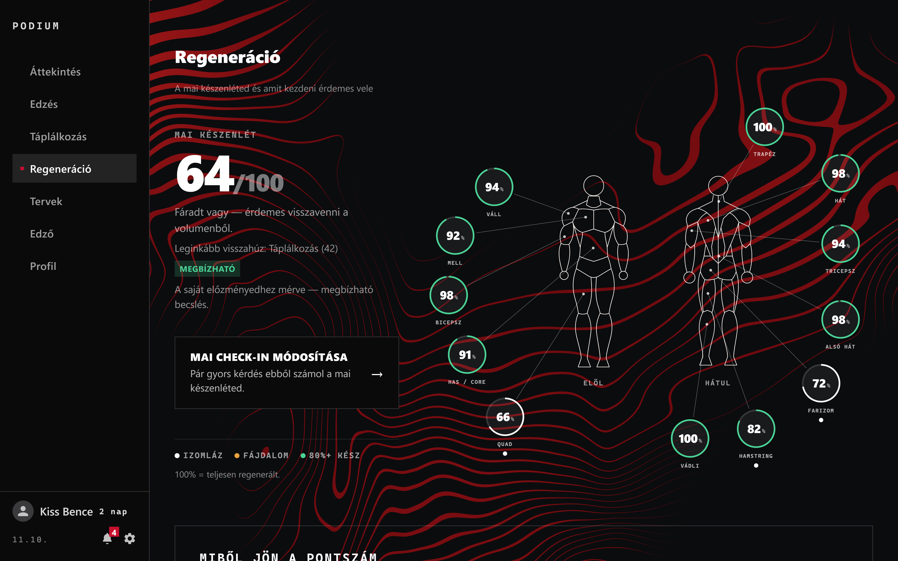
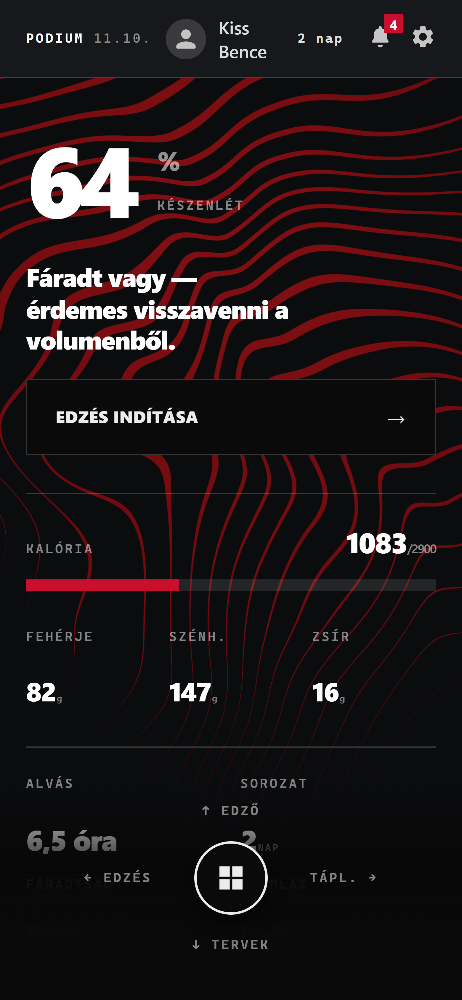
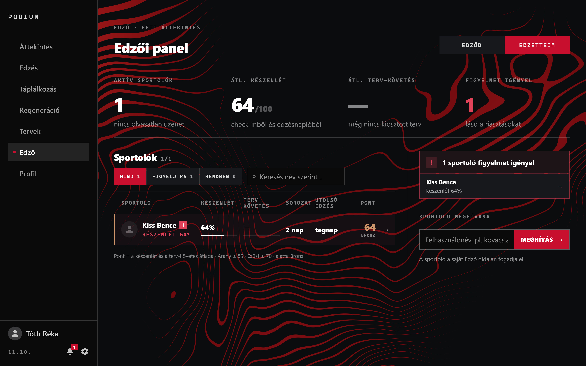

A Podium böngészőből, telepítés nélkül használható webes alkalmazás. Összeköti az edzés, az étkezés és a pihenés adatait, és minden reggel kiszámolja, mennyire áll készen a sportoló egy újabb edzésre – összesítve és 12 izomcsoportra külön is.


Aki rendszeresen edz, gyakran két-három külön appot használ az edzésre, az étkezésre és a pihenésre. Ezek nem tudnak egymásról, így a sportoló csak az érzéseire hagyatkozhat: túlterheli magát, vagy feleslegesen visszavesz.
A személyi edzők pedig táblázatban, papíron vagy chatben követik a klienseiket. Ötletünk: egy app, amely mindezt egy helyen kezeli, és össze is kapcsolja. Új projekt, 2026 júliusában kezdtük.
súly, ismétlés, érzett nehézség (1–10)
becsült maximális erő: Epley (1985) · RPE: Zourdos és mtsai (2016) · kardió: Foster és mtsai (2001)
alvás, energia, stressz, közérzet, izomláz, fájdalom
Hooper és Mackinnon (1995) kérdőíve alapján
kalória, fehérje, folyadék – a kitűzött célhoz mérve
A fáradtság fokozatosan cseng le (Calvert és mtsai, 1976); a terhelést a sportoló saját 28 napos átlagához mérjük.
+ ajánlott gyakorlatok és súlyok; erős fájdalomnál az érintett gyakorlat kimarad.
Technika: Node.js + Express, SQLite (22 tábla), böngészős felület. Hárman fejlesztettük, MI-alapú programozási segéd (Claude Code) támogatásával.

Kiderülhet, mennyire jó jel egy rövid kérdőív a drága mérőeszközök helyett. A modell nyílt, vizsgálható.
Nem kell külön eszköz vagy havidíj. Az edzők kevesebbet adminisztrálnak.
Biztonságosabb edzés, kevesebb sérülés. Magyarul, bárkinek elérhető, az adatokat GDPR szerint védi.
A Podium működő, tesztelt rendszer: öt célból négy teljesült, egy nagyrészt. Hogy mennyit segít, a valódi sportolókkal végzett kipróbálás mutatja meg.
Korlát: a súlyok saját becslések; a pontszám tájékoztató, nem orvosi vélemény.
Anthropic. (2026). Claude Code (Version 2.1.317) [Large language model]. https://claude.com/product/claude-code
Borg, G. A. V. (1982). Psychophysical bases of perceived exertion. Medicine and Science in Sports and Exercise, 14(5), 377–381. https://doi.org/10.1249/00005768-198205000-00012
Calvert, T. W., Banister, E. W., Savage, M. V., & Bach, T. (1976). A systems model of the effects of training on physical performance. IEEE Transactions on Systems, Man, and Cybernetics, SMC-6(2), 94–102. https://doi.org/10.1109/TSMC.1976.5409179
Epley, B. (1985). Poundage chart. In Boyd Epley workout. Body Enterprises.
European Parliament & Council of the European Union. (2016). Regulation (EU) 2016/679 (General Data Protection Regulation). Official Journal of the European Union, L 119, 1–88. https://eur-lex.europa.eu/eli/reg/2016/679/oj
Foster, C., Florhaug, J. A., Franklin, J., Gottschall, L., Hrovatin, L. A., Parker, S., Doleshal, P., & Dodge, C. (2001). A new approach to monitoring exercise training. Journal of Strength and Conditioning Research, 15(1), 109–115. https://doi.org/10.1519/00124278-200102000-00019
Gym visual. (n.d.). Gym visual [Exercise images and animations]. Retrieved November 4, 2026, from https://gymvisual.com/
Hipp, D. R. (2026). SQLite (Version 3.53.0) [Computer software]. https://sqlite.org/
Hooper, S. L., & Mackinnon, L. T. (1995). Monitoring overtraining in athletes: Recommendations. Sports Medicine, 20(5), 321–327. https://doi.org/10.2165/00007256-199520050-00003
Impellizzeri, F. M., Tenan, M. S., Kempton, T., Novak, A., & Coutts, A. J. (2020). Acute:chronic workload ratio: Conceptual issues and fundamental pitfalls. International Journal of Sports Physiology and Performance, 15(6), 907–913. https://doi.org/10.1123/ijspp.2019-0864
Open Food Facts. (2026). Open Food Facts [Data set]. Retrieved November 4, 2026, from https://world.openfoodfacts.org/
OpenJS Foundation. (2026a). ESLint (Version 10.10.0) [Computer software]. https://eslint.org/
OpenJS Foundation. (2026b). Express (Version 4.22.3) [Computer software]. https://expressjs.com/
OpenJS Foundation. (2026c). Node.js (Version 24.16.0) [Computer software]. https://nodejs.org/
Prettier. (2026). Prettier (Version 3.9.6) [Computer software]. https://prettier.io/
Strength Level. (2026). Strength standards [Data set]. Retrieved November 4, 2026, from https://strengthlevel.com/strength-standards
Yıldırım, H. E. (2026). exercises-dataset [Data set]. GitHub. https://github.com/hasaneyldrm/exercises-dataset
Zourdos, M. C., Klemp, A., Dolan, C., Quiles, J. M., Schau, K. A., Jo, E., Helms, E., Esgro, B., Duncan, S., Garcia Merino, S., & Blanco, R. (2016). Novel resistance training–specific rating of perceived exertion scale measuring repetitions in reserve. Journal of Strength and Conditioning Research, 30(1), 267–275. https://doi.org/10.1519/JSC.0000000000001049
zxing-js. (2024). ZXing library (Version 0.21.3) [Computer software]. https://github.com/zxing-js/library